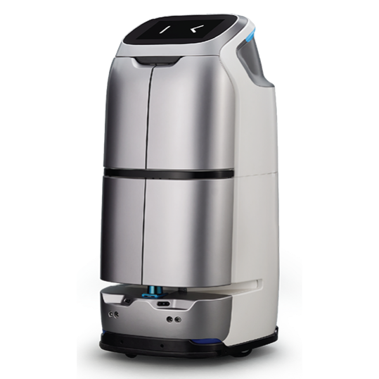
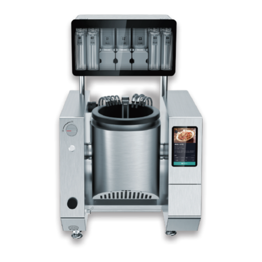
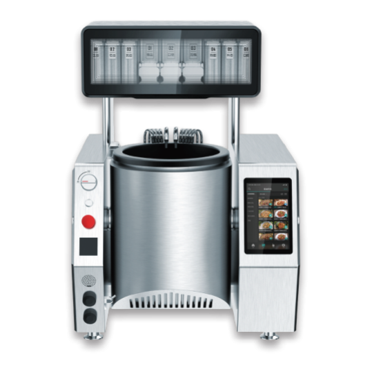
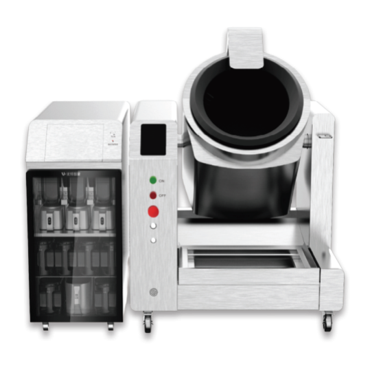
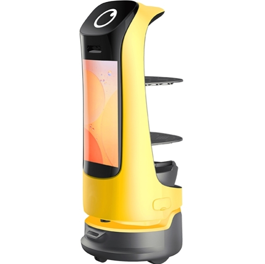

For Business Owners
人手請唔到？先試，再租，再買斷
請不到人、留不住人，是不少商戶的日常。BottiZ 讓您先在實際場地試用機械人，看到成效才決定租賃或買斷。
Options
先試、租賃、買斷
三種方式的條款正在整理，確認後會在此列明。
| 項目 | 先試 | 租賃 | 買斷 |
|---|---|---|---|
| 適合情況 | 【待填：先試：適合哪類商戶】 | 【待填：租賃：適合哪類商戶】 | 【待填：買斷：適合哪類商戶】 |
| 費用結構 | 【待填：先試：費用項目與收費方式】 | 【待填：租賃：費用項目與收費方式】 | 【待填：買斷：費用項目與收費方式】 |
| 合約期 | 【待填：先試：最短合約期】 | 【待填：租賃：最短合約期】 | 【待填：買斷：最短合約期】 |
| 包含服務 | 【待填：先試：部署、培訓、保養範圍】 | 【待填：租賃：部署、培訓、保養範圍】 | 【待填：買斷：部署、培訓、保養範圍】 |
| 期滿安排 | 【待填：先試：期滿後的選擇】 | 【待填：租賃：期滿後的選擇】 | 【待填：買斷：期滿後的選擇】 |
| 轉換安排 | 【待填：先試：轉換方案及費用處理】 | 【待填：租賃：轉換方案及費用處理】 | 【待填：買斷：轉換方案及費用處理】 |
ROI
先算清楚，再決定
輸入現有人手、平均月薪及擬由機械人分擔的工序比例，粗略估算每月節省與回本期。數字由您輸入，結果僅供參考，實際視場地而定。
Models
適用機型
以下機型涵蓋餐飲及酒店的常見需要，實際組合視乎場地與人手情況。




由試用到落地
先勘察、再示範，確認合適才部署。以下是 BottiZ 落地六步，每步都有明確交付。
-
了解需要
交付需求清單與成功指標
-
場地勘察
交付路線、網絡、電梯及人流評估報告
-
方案配置
交付機型組合與 ROI 估算
-
實機示範
交付示範結果與客人回饋
-
部署及培訓
交付驗收清單與培訓記錄
-
售後支援
交付月度成效報告與保養紀錄
Safety
安全與責任
機械人與人共用空間，安全、責任與私隱須事先講清楚。
FAQ
常見問題
可以先試用機械人，才決定租或買嗎？
「BottiZ 落地六步」包括實機示範，可在實際場地先看結果。試用、租賃及買斷的具體條款，以書面方案為準。
怎樣估算機械人的回本期？
可使用本站的「人手成本與回本期估算」：輸入人手、月薪及機械人分擔的工序比例，粗略估算每月節省與回本期。結果僅供參考，實際視場地而定。
餐飲及酒店有哪些機型可以選擇？
餐飲方面有 G2、G3、G5 AI 炒餸機械人及 KettyBot 送遞招待機械人；酒店可考慮 W3 酒店梯控配送機械人。實際組合視乎場地與需要。
租賃合約期最短多長？
【待填：租賃最短合約期，待確認後填寫】
買斷後的保養如何安排？
【待填：買斷後的保養與售後範圍，待確認後填寫】
想知道貴店是否合適？
由勘察開始，我們會說明場地條件與建議的機型組合。